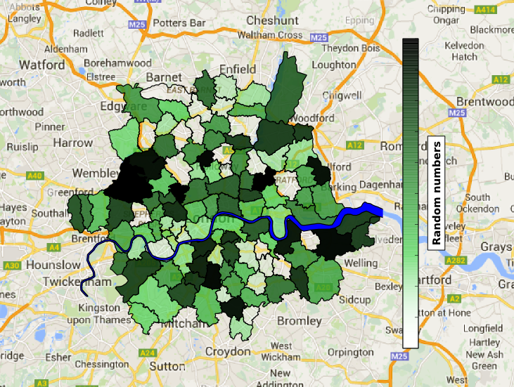

Analysis for marking
Analysing and visualising internal company data
I worked with Tutorfair, an online tutor marketplace, to use their data to more precisely direct their marketing and recruitment campaigns.
Skills employed: MySQL, Python, (Matplotlib, Numpy, basemap, fiona), statistics (regression analysis, significance testing), QGIS, GIS, project design, database design, Linux
An example of the visualisation of geographic data. The shapes are the London postcode regions.
Online marketplace for tutors
Tutorfair is a London-based startup providing an online marketplace for tutors, currently growing rapidly. It helps children succeed by making it easy to find the best tutors, and for every student who pays, they give free tutoring to a child who can't.
The tutoring market in the UK is worth an estimated £6.5 billion a year, with 40% of school children in London having a tutor. Tutorfair was founded in 2012 and now provides tutors to thousands of school children.
As a recent, technology-centred startup Tutorfair has a large, quite comprehensive and complete transactions and tutors databases. They also have quite exhaustive records of their traffic website, collected using Google Analytics. They market using Google Ads, making bids for appropriate key word searches.
Challenge
Tutorfair was about to substantially increase the amount they were bidding for Google Ads, and wanted to more accurately target their marketing efforts to specific regions to more successfully link tutors with children. Tutorfair also wanted to target their recruitment to areas where they already had a large demand for tutoring but weaker coverage from tutors.
Solution
To target marketing, the regions with high tutor coverage were prioritised; the areas in London where lots of tutors would travel to. The regions with high sales were also prioritised – the Tutorfair infrastructure was well established in those regions, and would support an increase in demand. I also looked for regions where tutors would visit for tutoring, but didn't have many sales, as additional targets for increased marketing.
To find the tutor coverage, I calculated how far each tutor had travelled, and used this to estimate where in London they'd be willing to go. This was calculated using where the tutor lived and where the tutor had tutored, using the tutor and sales databases. I then estimated typical travel distances and potential coverage.
To find the regions where Tutorfair has successfully sold, I used the sales database, and to find regions where people were looking for tutors, I used the Google Analytics information for the most popular location searches.
This geographical information was presented on maps of London, along with more standard regression analyses. I also repeated this analysis for subject tutored, and subject level tutored, though the subjects tutored were, in general, the subjects in demand.
Results
This lead to some clear recommendations – marketing should be directed to the regions where their tutor coverage is high, and recruitment should be directed where searches are high but coverage and sales are low. Using these results, Tutorfair directed their marketing efforts towards the recommended regions, increasing the Google Ads bidding.
They also took the analysis and plotting code and, as they were all automated, included it as part of their monthly reporting.